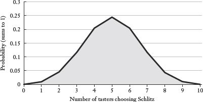

Don’t buy the extended warranty on your $99 printer
In 1981, the Joseph Schlitz Brewing Company spent $1.7 million for what appeared to be a shockingly bold and risky marketing campaign for its flagging brand, Schlitz. At halftime of the Super Bowl, in front of 100 million people around the world, the company broadcast a live taste test pitting Schlitz Beer against a key competitor, Michelob.1 Bolder yet, the company did not pick random beer drinkers to evaluate the two beers; it picked 100 Michelob drinkers. This was the culmination of a campaign that had run throughout the NFL playoffs.2 There were five live television taste tests in all, each of which had 100 consumers of a competing brand (Budweiser, Miller, or Michelob) conduct a blind taste test between their supposed favorite beer and Schlitz. Each of the beer taste-offs was promoted aggressively, just like the playoff game during which it would be held (e.g., “Watch Schlitz v. Bud, Live during the AFC Playoffs”).
The marketing message was clear: Even beer drinkers who think they like another brand will prefer Schlitz in a blind taste test. For the Super Bowl spot, Schlitz even hired a former NFL referee to oversee the test. Given the risky nature of conducting blind taste tests in front of huge audiences on live TV, one can assume that Schlitz produced a spectacularly delicious beer, right?
Not necessarily. Schlitz needed only a mediocre beer and a solid grasp of statistics to know that this ploy—a term I do not use lightly, even when it comes to beer advertising—would almost certainly work out in its favor. Most beers in the Schlitz category taste about the same; ironically, that is exactly the fact that this advertising campaign exploited. Assume that the typical beer drinker off the street cannot tell Schlitz from Budweiser from Michelob from Miller. In that case, a blind taste test between any two of the beers is essentially a coin flip. On average, half the taste testers will pick Schlitz, and half will pick the beer it is “challenging.” This fact alone would probably not make a particularly effective advertising campaign. (“You can’t tell the difference, so you might as well drink Schlitz.”) And Schlitz absolutely, positively would not want to do this test among its own loyal customers; roughly half of these Schlitz drinkers would pick the competing beer. It looks bad when the beer drinkers supposedly most committed to your brand choose a competitor in a blind taste test—which is exactly what Schlitz was trying to do to its competitors.
Schlitz did something cleverer. The genius of the campaign was conducting the taste test exclusively among beer drinkers who stated that they preferred a competing beer. If the blind taste test is really just a coin flip, then roughly half of the Budweiser or Miller or Michelob drinkers will end up picking Schlitz. That makes Schlitz look really good. Half of all Bud drinkers like Schlitz better!
And it looks particularly good at halftime of the Super Bowl with a former NFL referee (in uniform) conducting the taste test. Still, it’s live television. Even if the statisticians at Schlitz had determined with loads of previous private trials that the typical Michelob drinker will pick Schlitz 50 percent of the time, what if the 100 Michelob drinkers taking the test at halftime of the Super Bowl turn out to be quirky? Yes, the blind taste test is the equivalent of a coin toss, but what if most of the tasters chose Michelob just by chance? After all, if we lined up the same 100 guys and asked them to flip a coin, it’s entirely possible that they would flip 85 or 90 tails. That kind of bad luck in the taste test would be a disaster for the Schlitz brand (not to mention a waste of the $1.7 million for the live television coverage).
Statistics to the rescue! If there were some kind of statistics superhero,* this is when he or she would have swooped into the Schlitz corporate headquarters and unveiled the details of what statisticians call a binomial experiment (also called a Bernoulli trial). The key characteristics of a binomial experiment are that we have a fixed number of trials (e.g., 100 taste testers), each with two possible outcomes (Schlitz or Michelob), and the probability of “success” is the same in each trial. (I am assuming the probability of picking one beer or the other is 50 percent, and I am defining “success” as a tester picking Schlitz.) We also assume that all the “trials” are independent, meaning that one blind taste tester’s decision has no impact on any other tester’s decision.
With only this information, a statistical superhero can calculate the probability of all the different outcomes for the 100 trials, such as 52 Schlitz and 48 Michelob or 31 Schlitz and 69 Michelob. Those of us who are not statistical superheroes can use a computer to do the same thing. The chances of all 100 taste testers picking Michelob were 1 in 1,267,650,600,228,229,401,496,703,205,376. There was probably a bigger chance that all of the testers would be killed at halftime by an asteroid. More important, the same basic calculations can give us the cumulative probability for a range of outcomes, such as the chances that 40 or fewer testers pick Schlitz. These numbers would clearly have assuaged the fears of the Schlitz marketing folks.
Let’s assume that Schlitz would have been pleased if at least 40 of the 100 tasters picked Schlitz—an impressive number given that all of the men taking the live blind taste test had professed to be Michelob drinkers. An outcome at least that good was highly likely. If the taste test is really like a flip of the coin, then basic probability tells us that there was a 98 percent chance that at least 40 of the tasters would pick Schlitz, and an 86 percent chance that at least 45 of the tasters would.† In theory, this wasn’t a very risky gambit at all.
So what happened to Schlitz? At halftime of the 1981 Super Bowl, exactly 50 percent of the Michelob drinkers chose Schlitz in the blind taste test.
There are two important lessons here: probability is a remarkably powerful tool, and many leading beers in the 1980s were indistinguishable from one another. This chapter will focus primarily on the first lesson.
Probability is the study of events and outcomes involving an element of uncertainty. Investing in the stock market involves uncertainty. So does flipping a coin, which may come up heads or tails. Flipping a coin four times in a row involves additional layers of uncertainty, because each of the four flips can result in a head or a tail. If you flip a coin four times in a row, I cannot know the outcome in advance with certainty (nor can you). Yet I can determine in advance that some outcomes (two heads, two tails) are more likely than others (four heads). As the folks at Schlitz reckoned, those kinds of probability-based insights can be extremely helpful. In fact, if you can understand why the probability of flipping four heads in a row with a fair coin is 1 in 16, you can (with some work) understand everything from how the insurance industry works to whether a pro football team should kick the extra point after a touchdown or go for a two-point conversion.
Let’s start with the easy part: Many events have known probabilities. The probability of flipping heads with a fair coin is ½. The probability of rolling a one with a single die is . Other events have probabilities that can be inferred on the basis of past data. The probability of successfully kicking the extra point after touchdown in professional football is .94, meaning that kickers make, on average, 94 out of every 100 extra-point attempts. (Obviously this figure might vary slightly for different kickers, under different weather circumstances, and so on, but it’s not going to change radically.) Simply having and appreciating this kind of information can often clarify decision making and render risks explicit. For example, the Australian Transport Safety Board published a report quantifying the fatality risks for different modes of transport. Despite widespread fear of flying, the risks associated with commercial air travel are tiny. Australia hasn’t had a commercial air fatality since the 1960s, so the fatality rate per 100 million kilometers traveled is essentially zero. The rate for drivers is .5 fatalities per 100 million kilometers traveled. The really impressive number is for motorcycles—if you aspire to be an organ donor. The fatality rate is thirty-five times higher for motorcycles than for cars.3
In September of 2011, a 6.5-ton NASA satellite was plummeting to earth and was expected to break apart once it hit the earth’s atmosphere. What were the chances of being struck by the debris? Should I have kept the kids home from school? The rocket scientists at NASA estimated that the probability of any individual person’s being hit by a part of the falling satellite was 1 in 21 trillion. Yet the chances that anyone anywhere on earth might get hit were a more sobering 1 in 3,200.* In the end, the satellite did break apart on reentry, but scientists aren’t entirely certain where all the pieces ended up.4 No one reported being hurt. Probabilities do not tell us what will happen for sure; they tell us what is likely to happen and what is less likely to happen. Sensible people can make use of these kinds of numbers in business and life. For example, when you hear on the radio that a satellite is plummeting to earth, you should not race home on your motorcycle to warn the family.
When it comes to risk, our fears do not always track with what the numbers tell us we should be afraid of. One of the striking findings from Freakonomics, by Steve Levitt and Stephen Dubner, was that swimming pools in the backyard are far more dangerous than guns in the closet.5 Levitt and Dubner calculate that a child under ten is one hundred times more likely to die in a swimming pool than from a gun accident.† An intriguing paper by three Cornell researchers, Garrick Blalock, Vrinda Kadiyali, and Daniel Simon, found that thousands of Americans may have died since the September 11 attacks because they were afraid to fly.6 We will never know the true risks associated with terrorism; we do know that driving is dangerous. When more Americans opted to drive rather than to fly after 9/11, there were an estimated 344 additional traffic deaths per month in October, November, and December of 2001 (taking into account the average number of fatalities and other factors that typically contribute to road accidents, such as weather). This effect dissipated over time, presumably as the fear of terrorism diminished, but the authors of the study estimate that the September 11 attacks may have caused more than 2,000 driving deaths.
Probability can also sometimes tell us after the fact what likely happened and what likely did not happen—as in the case of DNA analysis. When the technicians on CSI: Miami find a trace of saliva on an apple core near a murder victim, that saliva does not have the murderer’s name on it, even when viewed under a powerful microscope by a very attractive technician. Instead, the saliva (or hair, or skin, or bone fragment) will contain a DNA segment. Each DNA segment in turn has regions, or loci, that can vary from individual to individual (except for identical twins, who share the same DNA). When the medical examiner reports that a DNA sample is a “match,” that’s only part of what the prosecution has to prove. Yes, the loci tested on the DNA sample from the crime scene must match the loci on the DNA sample taken from the suspect. However, the prosecutors must also prove that the match between the two DNA samples is not merely a coincidence.
Humans share similarities in their DNA, just as we share other similarities: shoe size, height, eye color. (More than 99 percent of all DNA is identical among all humans.) If researchers have access to only a small sample of DNA on which only a few loci can be tested, it’s possible that thousands or even millions of individuals may share that genetic fragment. Therefore, the more loci that can be tested, and the more natural genetic variation there is in each of those loci, the more certain the match becomes. Or, to put it a bit differently, the less likely it becomes that the DNA sample will match more than one person.7
To get your mind around this, imagine that your “DNA number” consists of your phone number attached to your Social Security number. This nineteen-digit sequence uniquely identifies you. Consider each digit a “locus” with ten possibilities: 0, 1, 2, 3, and so on. Now suppose that crime scene investigators find the remnant of a “DNA number” at a crime scene: _ _ 4 5 9 _ _ _ 4 _ 0 _ 9 8 1 7 _ _ _. This happens to match exactly with your “DNA number.” Are you guilty?
You should see three things. First, anything less than a full match of the entire genome leaves some room for uncertainty. Second, the more “loci” that can be tested, the less uncertainty remains. And third, context matters. This match would be extremely compelling if you also happened to be caught speeding away from the crime scene with the victim’s credit cards in your pocket.
When researchers have unlimited time and resources, the typical process involves testing thirteen different loci. The chances that two people share the same DNA profile across all thirteen loci are extremely low. When DNA was used to identify the remains found in the World Trade Center after September 11, samples found at the scene were matched to samples provided by family members of the victims. The probability required to establish positive identification was one in a billion, meaning that the probability that the discovered remains belonged to someone other than the identified victim had to be judged as one in one billion or less. Later in the search, this standard was relaxed, as there were fewer unidentified victims with whom the remains could be confused.
When resources are limited, or the available DNA sample is too small or too contaminated for thirteen loci to be tested, things get more interesting and controversial. The Los Angeles Times ran a series in 2008 examining the use of DNA as criminal evidence.8 In particular, the Times questioned whether the probabilities typically used by law enforcement understate the likelihood of coincidental matches. (Since no one knows the DNA profile of the entire population, the probabilities presented in court by the FBI and other law enforcement entities are estimates.) The intellectual pushback was instigated when a crime lab analyst in Arizona running tests with the state’s DNA database discovered two unrelated felons whose DNA matched at nine loci; according to the FBI, the chances of a nine-loci match between two unrelated persons are 1 in 113 billion. Subsequent searches of other DNA databases turned up more than a thousand human pairs with genetic matches at nine loci or more. I’ll leave this issue for law enforcement and defense lawyers to work out. For now, the lesson is that the dazzling science of DNA analysis is only as good as the probabilities used to support it.
Often it is extremely valuable to know the likelihood of multiple events’ happening. What is the probability that the electricity goes out and the generator doesn’t work? The probability of two independent events’ both happening is the product of their respective probabilities. In other words, the probability of Event A happening and Event B happening is the probability of Event A multiplied by the probability of Event B. An example makes it much more intuitive. If the probability of flipping heads with a fair coin is ½, then the probability of flipping heads twice in a row is ½ × ½, or ¼. The probability of flipping three heads in a row is ⅛, the probability of four heads in a row is 1/16, and so on. (You should see that the probability of throwing four tails in a row is also 1/16.) This explains why the system administrator at your school or office is constantly on your case to improve the “quality” of your password. If you have a six-digit password using only numerical digits, we can calculate the number of possible passwords: 10 × 10 × 10 × 10 × 10 × 10, which equals 106, or 1,000,000. That sounds like a lot of possibilities, but a computer could blow through all 1,000,000 possible combinations in a fraction of a second.
So let’s suppose that your system administrator harangues you long enough that you include letters in your password. At that point, each of the 6 digits now has 36 combinations: 26 letters and 10 digits. The number of possible passwords grows to 36 × 36 × 36 × 36 × 36 × 36, or 366, which is over two billion. If your administrator demands eight digits and urges you to use symbols like #, @, % and !, as the University of Chicago does, the number of potential passwords climbs to 468, or just over 20 trillion.
There is one crucial distinction here. This formula is applicable only if the events are independent, meaning that the outcome of one has no effect on the outcome of another. For example, the probability that you throw heads on the first flip does not change the likelihood of your throwing heads on the second flip. On the other hand, the probability that it rains today is not independent of whether it rained yesterday, since storm fronts can last for days. Similarly, the probability of crashing your car today and crashing your car next year are not independent. Whatever caused you to crash this year might also cause you to crash next year; you might be prone to drunk driving, drag racing, texting while driving, or just driving badly. (This is why your auto insurance rates go up after an accident; it is not simply that the company wants to recover the money that it has paid out for the claim; rather, it now has new information about your probability of crashing in the future, which—after you’ve driven the car through your garage door—has gone up.)
Suppose you are interested in the probability that one event happens or another event happens: outcome A or outcome B (again assuming that they are independent). In this case, the probability of getting A or B consists of the sum of their individual probabilities: the probability of A plus the probability of B. For example, the likelihood of throwing a 1, 2, or 3, with a single die is the sum of their individual probabilities: + + = = ½. This should make intuitive sense. There are six possible outcomes for the roll of a die. The numbers 1, 2, and 3 collectively make up half of those possible outcomes. Therefore you have a 50 percent chance of rolling a 1, 2, or 3. If you are playing craps in Las Vegas, the chance of rolling a 7 or 11 in a single throw is the number of combinations that sum to 7 or 11 divided by the total number of combinations that can be thrown with two dice, or .*
Probability also enables us to calculate what might be the most useful tool in all of managerial decision making, particularly finance: expected value. The expected value takes basic probability one step further. The expected value or payoff from some event, say purchasing a lottery ticket, is the sum of all the different outcomes, each weighted by its probability and payoff. As usual, an example makes this clearer. Suppose you are invited to play a game in which you roll a single die. The payoff to this game is $1 if you roll a 1; $2 if you roll a 2; $3 if you roll a 3; and so on. What is the expected value for a single roll of the die? Each possible outcome has a probability, so the expected value is:
($1) + ($2) + ($3) + ($4) + ($5) + ($6) = , or $3.50.
At first glance, the expected value of $3.50 might appear to be a relatively useless figure. After all, you can’t actually earn $3.50 with a single roll of the die (since your payoff has to be a whole number). In fact, the expected value turns out to be extremely powerful because it can tell you whether a particular event is “fair,” given its price and expected outcome. Suppose you have the chance to play the above game for $3 a throw. Does it make sense to play? Yes, because the expected value of the outcome ($3.50) is higher than the cost of playing ($3.00). This does not guarantee that you will make money by playing once, but it does help clarify which risks are worth taking and which are not.
We can take this hypothetical example and apply it to professional football. As noted earlier, after a touchdown, teams have a choice between kicking an extra point and attempting a two-point conversion. The former involves kicking the ball through the goalposts from the three yard line; the latter involves running or passing it into the end zone from the three yard line, which is significantly more difficult. Teams can choose the easy option and get one point, or they can choose the harder option and get two points. What to do?
Statisticians may not play football or date cheerleaders, but they can provide statistical guidance for football coaches.9 As pointed out earlier, the probability of making the kick after a touchdown is .94. This means that the expected value of a point-after attempt is also .94, since it equals the payoff (1 point) multiplied by the probability of success (.94). No team ever scores .94 points, but this figure is helpful in quantifying the value of attempting this option after a touchdown relative to the alternative, which is the two-point conversion. The expected value of “going for two” is much lower: .74. Yes, the payoff is higher (2 points), but the success rate is dramatically lower (.37). Obviously if there is one second left in the game and a team is behind by two points after scoring a touchdown, it has no choice but to go for a two-point conversion. But if a team’s goal is to maximize points scored over time, then kicking the extra point is the strategy that will do that.
The same basic analysis can illustrate why you should never buy a lottery ticket. In Illinois, the probabilities associated with the various possible payoffs for the game are printed on the back of each ticket. I purchased a $1 instant ticket. (Note to self: Is this tax deductible?) On the back—in tiny, tiny print—are the chances of winning different cash prizes, or a free new ticket: 1 in 10 (free ticket); 1 in 15 ($2); 1 in 42.86 ($4); 1 in 75 ($5); and so on up to the 1 in 40,000 chance of winning $1,000. I calculated the expected payout for my instant ticket by adding up each possible cash prize weighted by its probability.* It turns out that my $1 lottery ticket has an expected payout of roughly $.56, making it an absolutely miserable way to spend $1. As luck would have it, I won $2.
My $2 prize notwithstanding, buying the ticket was a stupid thing to do. This is one of the crucial lessons of probability. Good decisions—as measured by the underlying probabilities—can turn out badly. And bad decisions—like spending $1 on the Illinois lottery—can still turn out well, at least in the short run. But probability triumphs in the end. An important theorem known as the law of large numbers tells us that as the number of trials increases, the average of the outcomes will get closer and closer to its expected value. Yes, I won $2 playing the lotto today. And I might win $2 again tomorrow. But if I buy thousands of $1 lottery tickets, each with an expected payout of $.56, then it becomes a near mathematical certainty that I will lose money. By the time I’ve spent $1 million on tickets, I’m going to end up with something strikingly close to $560,000.
The law of large numbers explains why casinos always make money in the long run. The probabilities associated with all casino games favor the house (assuming that the casino can successfully prevent blackjack players from counting cards). If enough bets are wagered over a long enough time, the casino will be certain to win more than it loses. The law of large numbers also demonstrates why Schlitz was much better off doing 100 blind taste tests at halftime of the Super Bowl rather than just 10. Check out the “probability density functions” for a Schlitz type of test with 10, 100, and 1,000 trials. (Although it sounds fancy, a probability density function merely plots the assorted outcomes along the x-axis and the expected probability of each outcome on the y-axis; the weighted probabilities—each outcome multiplied by its expected frequency—will add up to 1.) Again I’m assuming that the taste test is just like a coin flip and each tester has a .5 probability of choosing Schlitz. As you can see below, the expected outcome converges around 50 percent of tasters’ choosing Schlitz as the number of tasters gets larger. At the same time, the probability of getting an outcome that deviates sharply from 50 percent falls sharply as the number of trials gets large.
10 Trials

100 Trials
1,000 Trials
I stipulated earlier that Schlitz executives would be happy if 40 percent or more of the Michelob drinkers chose Schlitz in the blind taste test. The figures below reflect the probability of getting that outcome as the number of tasters gets larger:
10 blind taste testers: .83
100 blind taste testers: .98
1,000 blind taste testers: .9999999999
1,000,000 blind taste testers: 1
By now the intuition is obvious behind the chapter subtitle, “Don’t buy the extended warranty on your $99 printer.” Okay, maybe that’s not so obvious. Let me back up. The entire insurance industry is built on probability. (A warranty is just a form of insurance.) When you insure anything, you are contracting to receive some specified payoff in the event of a clearly defined contingency. For example, your auto insurance will replace your car in the event that it gets stolen or crushed by a tree. In exchange for this guarantee, you agree to pay some fixed amount of money for the period in which you are insured. The key idea is that in exchange for a regular and predictable payment, you have transferred to the insurance company the risk of having your car stolen, crushed, or even totaled by your own bad driving.
Why are these companies willing to assume such risks? Because they will earn large profits in the long run if they price their premiums correctly. Obviously some cars insured by Allstate will get stolen. Others will get totaled when their owners drive over a fire hydrant, as happened to my high school girlfriend. (She also had to replace the fire hydrant, which is far more expensive than you might think.) But most cars insured by Allstate or any other company will be just fine. To make money, the insurance company need only collect more in premiums than it pays out in claims. And to do that, the firm must have a solid grasp of what is known in industry jargon as the “expected loss” on every policy. This is exactly the same concept as expected value, only with an insurance twist. If your car is insured for $40,000, and the chances of its getting stolen in any given year are 1 in 1,000, then the annual expected loss on your car is $40. The annual premium for the theft portion of the coverage needs to be more than $40. At that point, the insurance company becomes just like the casino or the Illinois lottery. Yes, there will be payouts, but over the long run what comes in will be more than what goes out.
As a consumer, you should recognize that insurance will not save you money in the long run. What it will do is prevent some unacceptably high loss, such as replacing a $40,000 car that was stolen or a $350,000 house that burned down. Buying insurance is a “bad bet” from a statistical standpoint since you will pay the insurance company, on average, more than you get back. Yet it can still be a sensible tool for protecting against outcomes that would otherwise wreck your life. Ironically, someone as rich as Warren Buffett can save money by not purchasing car insurance, homeowner’s insurance, or even health insurance because he can afford whatever bad things might happen to him.
Which finally brings us back to your $99 printer! We’ll assume that you’ve just picked out the perfect new laser printer at Best Buy or some other retailer.* When you reach the checkout counter, the sales assistant will offer you a series of extended warranty options. For another $25 or $50, Best Buy will fix or replace the printer should it break in the next year or two. On the basis of your understanding of probability, insurance, and basic economics, you should immediately be able to surmise all of the following: (1) Best Buy is a for-profit business that seeks to maximize profits. (2) The sales assistant is eager for you to buy the extended warranty. (3) From numbers 1 and 2, we can infer that the cost of the warranty to you is greater than the expected cost of fixing or repairing the printer for Best Buy. If this were not the case, Best Buy would not be so aggressive in trying to sell it to you. (4) If your $99 printer breaks and you have to pay out of pocket to fix or replace it, this will not meaningfully change your life.
On average, you’ll pay more for the extended warranty than you would to repair the printer. The broader lesson—and one of the core lessons of personal finance—is that you should always insure yourself against any adverse contingency that you cannot comfortably afford to withstand. You should skip buying insurance on everything else.
Expected value can also help us untangle complex decisions that involve many contingencies at different points in time. Suppose a friend of yours has asked you to invest $1 million in a research venture examining a new cure for male pattern baldness. You would probably ask what the likelihood of success will be; you’ll get a complicated answer. This is a research project, so there is only a 30 percent chance that the team will discover a cure that works. If the team does not find a cure, you will get $250,000 of your investment back, as those funds will have been reserved for taking the drug to market (testing, marketing, etc.) Even if the researchers are successful, there is only a 60 percent chance that the U.S. Food and Drug Administration will approve the new miracle baldness cure as safe for use on humans. Even then, if the drug is safe and effective, there is a 10 percent chance that a competitor will come to market with a better drug at about the same time, wiping out any potential profits. If everything goes well—the drug is safe, effective, and unchallenged by competitors—then the best estimate on the return on your investment is $25 million.
Should you make the investment?
This seems like a muddle of information. The potential payday is huge—25 times your initial investment—but there are so many potential pitfalls. A decision tree can help organize this kind of information and—if the probabilities associated with each outcome are correct—give you a probabilistic assessment of what you ought to do. The decision tree maps out each source of uncertainty and the probabilities associated with all possible outcomes. The end of the tree gives us all the possible payoffs and the probability of each. If we weight each payoff by its likelihood, and sum all the possibilities, we will get the expected value of this investment opportunity. As usual, the best way to understand this is to take a look.
The Investment Decision
This particular opportunity has an attractive expected value. The weighted payoff is $4.225 million. Still, this investment may not be the wisest thing to do with the college tuition money that you’ve squirreled away for your children. The decision tree lets you know that your expected payoff is far higher than what you are being asked to invest. On the other hand, the most likely outcome, meaning the one that will happen most often, is that the company will not discover a cure for baldness and you will get only $250,000 back. Your appetite for this investment might depend on your risk profile. The law of large numbers suggests that an investment firm, or a rich individual like Warren Buffet, should seek out hundreds of opportunities like this with uncertain outcomes but attractive expected returns. Some will work; many won’t. On average, these investors will make a lot of money, just like an insurance company or a casino. If the expected payoff is in your favor, more trials are always better.
The same basic process can be used to explain a seemingly counterintuitive phenomenon. Sometimes it does not make sense to screen the entire population for a rare but serious disease, such as HIV/AIDS. Suppose we can test for some rare disease with a high degree of accuracy. For the sake of example, let’s assume the disease affects 1 of every 100,000 adults and the test is 99.9999 percent accurate. The test never generates a false negative (meaning that it never misses someone who has the disease); however, roughly 1 in 10,000 tests conducted on a healthy person will generate a false positive, meaning that the person tests positive but does not actually have the disease. The striking outcome here is that despite the impressive accuracy of the test, most of the people who test positive will not have the disease. This will generate enormous anxiety among those who falsely test positive; it can also waste finite health care resources on follow-up tests and treatment.
If we test the entire American adult population, or roughly 175 million people, the decision tree looks like the following:
Widespread Screening for a Rare Disease
Only 1,750 adults have the disease. They all test positive. Over 174 million adults do not have the disease. Of this healthy group who are tested, 99.9999 get the correct result that they do not have the disease. Only .0001 get a false positive. But .0001 of 174 million is still a big number. In fact, 17,500 people will, on average, get false positives.
Let’s look at what that means. A total of 19,250 people are notified that they have the disease; only 9 percent of them are actually sick! And that’s with a test that has a very low rate of false positives. Without going too far off topic, this should give you some insight into why cost containment in health care sometimes involves less screening of healthy people for diseases, not more. In the case of a disease like HIV/AIDS, public health officials will often recommend that the resources available be used to screen the populations at highest risk, such as gay men or intravenous drug users.
Sometimes probability helps us by flagging suspicious patterns. Chapter 1 introduced the problem of institutionalized cheating on standardized tests and one of the firms that roots it out, Caveon Test Security. The Securities and Exchange Commission (SEC), the government agency responsible for enforcing federal laws related to securities trading, uses a similar methodology for catching inside traders. (Inside trading involves illegally using private information, such as a law firm’s knowledge of an impending corporate acquisition, to trade stock or other securities in the affected companies.) The SEC uses powerful computers to scrutinize hundreds of millions of stock trades and look for suspicious activity, such as a big purchase of shares in a company just before a takeover is announced, or the dumping of shares just before a company announces disappointing earnings.10 The SEC will also investigate investment managers with unusually high returns over long periods of time. (Both economic theory and historical data suggest that it is extremely difficult for a single investor to get above-average returns year after year.) Of course, smart investors are always trying to anticipate good and bad news and to devise perfectly legal strategies that consistently beat the market. Being a good investor does not necessarily make one a criminal. How does a computer tell the difference? I called the enforcement division of the SEC several times to ask what particular patterns are most likely to signal criminal activity. They still have not called me back.
In the 2002 film Minority Report, Tom Cruise plays a “pre-crime” detective who is part of a bureau that uses technology to predict crimes before they’re committed.
Well folks, that’s not science fiction anymore. In 2011, the New York Times ran the following headline: “Sending the Police before There’s a Crime.”11 The story described how detectives were dispatched to a parking garage in downtown Santa Cruz by a computer program that predicted that there was a high likelihood of burglaries from cars at that location on that day. Police subsequently arrested two women peering into car windows. One had outstanding arrest warrants; the other was carrying illegal drugs.
The Santa Cruz system was designed by two mathematicians, an anthropologist, and a criminologist. The Chicago Police Department has created an entire predictive analytics unit, in part because gang activity, the source of much of the city’s violence, follows certain patterns. The book Data Mining and Predictive Analysis: Intelligence Gathering and Crime Analysis, a guide to statistics for law enforcement, begins enthusiastically, “It is now possible to predict the future when it comes to crime, such as identifying crime trends, anticipating hotspots in the community, refining resource deployment decisions, and ensuring the greatest protection for citizens in the most efficient manner.” (Look, I read these kinds of things so that you don’t have to.)
“Predictive policing” is part of a broader movement called predictive analytics. Crime will always involve an element of uncertainty, as will determining who is going to crash his car or default on her mortgage. Probability helps us navigate those risks. And information refines our understanding of the relevant probabilities. Businesses facing uncertainty have always sought to quantify their risks. Lenders request things like income verification and a credit score. Yet these blunt credit instruments are starting to feel like the prediction equivalent of a caveman’s stone tools. The confluence of huge amounts of digital data and cheap computing power has generated fascinating insights into human behavior. Insurance officials correctly describe their business as the “transfer of risk”—and so they had better understand the risks being transferred to them. Companies like Allstate are in the business of knowing things that might otherwise seem like random trivia:12
• Twenty to twenty-four-year-old drivers are the most likely to be involved in a fatal crash.
• The most commonly stolen car in Illinois is the Honda Civic (as opposed to full-size Chevrolet pickups in Alabama).*
• Texting while driving causes crashes, but state laws banning the practice do not seem to stop drivers from doing it. In fact, such laws might even make things worse by prompting drivers to hide their phones and therefore take their eyes off the road while texting.
The credit card companies are at the forefront of this kind of analysis, both because they are privy to so much data on our spending habits and because their business model depends so heavily on finding customers who are just barely a good credit risk. (The customers who are the best credit risks tend to be money losers because they pay their bills in full each month; the customers who carry large balances at high interest rates are the ones who generate fat profits—as long as they don’t default.) One of the most intriguing studies of who is likely to pay a bill and who is likely to walk away was generated by J. P. Martin, “a math-loving executive” at Canadian Tire, a large retailer that sells a wide range of automotive products and other retail goods.13 When Martin analyzed the data—every transaction using a Canadian Tire credit card from the prior year—he discovered that what customers purchased was a remarkably precise predictor of their subsequent payment behavior when used in conjunction with traditional tools like income and credit history.
A New York Times Magazine article entitled “What Does Your Credit Card Company Know about You?” described some of Martin’s most intriguing findings: “People who bought cheap, generic automotive oil were much more likely to miss a credit-card payment than someone who got the expensive, name-brand stuff. People who bought carbon-monoxide monitors for their homes or those little felt pads that stop chair legs from scratching the floor almost never missed payments. Anyone who purchased a chrome-skull car accessory or a ‘Mega Thruster Exhaust System’ was pretty likely to miss paying his bill eventually.”
Probability gives us tools for dealing with life’s uncertainties. You shouldn’t play the lottery. You should invest in the stock market if you have a long investment horizon (because stocks typically have the best long-term returns). You should buy insurance for some things, but not others. Probability can even help you maximize your winnings on game shows (as the next chapter will show.)
That said (or written), probability is not deterministic. No, you shouldn’t buy a lottery ticket—but you still might win money if you do. And yes, probability can help us catch cheaters and criminals—but when used inappropriately it can also send innocent people to jail. That’s why we have Chapter 6.
* I have in mind “Six Sigma Man.” The lowercase Greek letter sigma, σ, represents the standard deviation. Six Sigma Man is six standard deviations above the norm in terms of statistical ability, strength, and intelligence.
† For all of these calculations, I’ve used a handy online binomial calculator, at http://stattrek.com/Tables/Binomial.aspx.
* NASA also pointed out that even falling space debris is government property. Apparently it is illegal to keep a satellite souvenir, even if it lands in your backyard.
† The Levitt and Dubner calculations are as follows. Each year roughly 550 children under ten drown and 175 children under ten die from gun accidents. The rates they compare are 1 drowning for every 11,000 residential pools compared with 1 gun death per “million-plus” guns. For adolescents, I suspect the numbers may change sharply, both because they are better able to swim and because they are more likely to cause a tragedy if they stumble upon a loaded gun. However, I have not checked the data on this point.
* There are 6 ways to throw a 7 with two dice: (1,6); (2,5); (3,4); (6,1); (5,2); and (4,3). There are only 2 ways to throw an 11: (5,6) and (6,5).
Meanwhile, there are 36 total possible throws with two dice: (1,1); (1,2); (1,3); (1,4); (1,5); (1,6). And (2,1); (2,2); (2,3); (2,4); (2,5); (2,6). And (3,1); (3,2); (3,3); (3,4); (3,5); (3,6). And (4,1); (4,2); (4,3); (4,4); (4,5); (4,6). And (5,1); (5,2); (5,3); (5,4); (5,5); (5,6). And, finally, (6,1); (6,2); (6,3); (6,4); (6,5); and (6,6).
Thus, the chance of throwing a 7 or 11 is the number of possible ways of throwing either of those two numbers divided by the total number of possible throws with two dice, which is 8/36. Incidentally, much of the earlier research on probability was done by gamblers to determine exactly this kind of thing.
* The full expected value for the Illinois Dugout Doubler $1 ticket (rounded to the nearest cent) is as follows: 1/15 ($2) + 1/42.86 ($4) + 1/75 ($5) + 1/200 ($10) + 1/300 ($25) + 1/1,589.40 ($50) + 1/8000 ($100) + 1/16,000 ($200) + 1/48,000 ($500) + 1/40,000 ($1,000) = $.13 + $.09 + $.07 + $.05 + $.08 + $.03 + $.01 + $.01 + $.01 + $.03 = $.51. However, there is also a 1/10 chance of getting a free ticket, which has an expected payout of $.51, so the overall expected payout is $.51 + .1 ($.51) = $.51 + $.05 = $.56.
* Earlier in the book I used an example that involved drunken employees producing defective laser printers. You will need to forget that example here and assume that the company has fixed its quality problems.
* Since I’ve admonished you to be a stickler about descriptive statistics, I feel compelled to point out that the most commonly stolen car is not necessarily the kind of car that is most likely to be stolen. A high number of Honda Civics are reported stolen because there are a lot of them on the road; the chances that any individual Honda Civic is stolen (which is what car insurance companies care about) might be quite low. In contrast, even if 99 percent of all Ferraris are stolen, Ferrari would not make the “most commonly stolen” list, because there are not that many of them to steal.